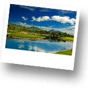

Спорт в Хуа Хине

Гольф
Хуа Хин это не только один из самых старых в Таиланде курортов, но и столица гольфа этой станы. Десятки полей предлагаю игрокам лучшие гольф-места. Гольф-клубы расположены по всему Хуа Хине, есть даже с видом на море, с персональными кондоминиумами и виллами. Гольфисты съезжаются со всего света, чтобы поиграть в этом оазисе. Особо популярен гольф среди скандинавов, англичан и тайцев. Почти в любом гольф клубе можно купить разовую игру на весь день, включая аренду поля, инвентаря и помощника. Годовое членство в клубах начинается от 1000 $ и заканчивается бесконечностью. По всему Хуа Хину можно встретить десятки гольф-магазинов, торгующим как клюшками, мечами, сумками, так и одеждой, цены значительно ниже европейских, но так же не дешево. Научится этой прекрасной аристократичной игре под силу каждому, у кого есть такое желание.
Большой теннис
Вид спорта, в котором соперничают либо два игрока («одиночная игра»), либо две команды, состоящие из двух игроков («парная игра»). Задачей соперников (теннисистов или теннисисток) является при помощи ракеток отправлять мяч на сторону соперника так, чтобы тот не смог его отразить не более чем после первого падения мяча на игровом поле на половине соперника.Если Вы увлекаетесь этим видом спорта, то в Хуа Хине Вашему вниманию предлагаются хорошие теннисные корты. В случае, если Вам интересно попробовать себя в большом теннисе для Вас возможна организация курсов по обучению этой грациозной игре.
Кайтбординг
Для всех, кто интересуется этим прекрасным видом спорта или отдыха в Тайланде идеальное место - Хуа Хин! Кайтбординг это новый захватывающий спорт водного спорта, введенный в Тайланде совсем недавно. Западные берега Тайланда, известные своим сильным ветром в определенные месяца, отлично подходят для кайтбординга. Кайтбординг является полезным видом спорта, так как Вы можете провести время на открытом воздухе и на воде. Есть ряд школ кайтбординга в Хуа Хине, в которых Вас могут обучить настоящие специалисты. В чем же заключается этот вид спорта? Кайтсерфер стоит на доске и ноги ремнями или специальными повязками привязаны к ней. В руках человек держит большой управляемый парашют похожий на воздушного змея, который с помощью ветра несет спортсмена по воде. Но это только на первый взгляд кажется, что все так просто, но на деле вам придется многому научиться. Сезонность ветров в Хуа Хине – с конца октября по апрель. При чем октябрь – декабрь, дует северный и северо-восточный муссон.
Вейкбординг
Вейкбординг это вид воднолыжного спорта, в котором катание происходит на специальной водной доске – вейкборде. В вейкбординге выделяют две дисциплины: вейкборд-катер и вейкборд-электротяга. В кабельном вейкбординге движение спортсмена по воде происходит с помощью механизированной канатно-буксировочной установки, заменяющей катер. Существуют кольцевые установки, где движение происходит по кругу (вейкпарки) и реверсивные установки, где движение спортсмена возможно только вперед и назад. В Хуа Хине открыт Вейкпарк, где Вы можете попробовать себя в этом виде спорта.
Тайский бокс
Муай Тай одно из самых традиционных боевых искусств в Тайланде. Конечно, в Хуа Хине тайский бокс является одним самых захватывающих спортивных зрелищ. Поединки бойцов этого вида спорта можно увидеть в двух местах: возле Grand Hotel – большая арена и рядом с отелем City Beach – малая арена. Как правило все бои начинаются в 21.00. Тайский бокс очень отличается от традиционного бокса. В Муай Тай бойцы используют не только кулаки, но и колени, локти и даже ноги. Это очень зрелищный вид спорта. Обучаться этому исусству тайцы начинают с раннего детства и далеко не каждому ученику удается достичь должного уровня мастерства. Совсем недавно в стране начали проводить соревнования по Тайскому боксу среди женщин. В Хуа Хине есть несколько школ, где Вас могут обучить мастерству Муай Тай. Занятия проводит профессиональный боец и это действительно очень увлекательно.
Вело-спорт
Очень широко в Хуа Хине представлен велоспорт. Для Вас возможна организация вело-туров, как краткосрочных так и длительных. Велосипеды отличного качество можно взять в прокат, включая всю необходимую экипировку, так и приобрести в собственность по приемлемым ценам. Также Вы можете самостоятельно обследовать город и его окрестности на арендованном велосипеде. Помните, что велопрогулки и темболее серьезные велопутешествия требуют определенной физической подготовки, особенно учитывая достаточно жаркий климат Тайланда.
Квадроциклы
Отличная идея для экстримального путешествия! Вы можете совершить увлекательную спортивную прогулку в джунгли на квадроциклах. У Вас есть прекрасная возможность в живую, соприкоснуться с джунглям и болотами, проехать по полям и проселочным дорогам. Квадроциклы, благодаря автоматической коробке передач, чрезвычайно просты в управлении. Всего через несколько минут тренировки даже новичок будет чувствовать себя уверено. Во время путешествия Вы можете встретить различных животных в естейственной среде обитания. Вы сможете увидеть своими глазами плантации ананасов, бананов, папайи, кокосов и многое другое. Посмотреть на труд крестьян, возделывающих эти сельскохозяйственные культуры и их жилища.
Картинг
Популярным развлечением у туристов, проводящих свой отдых в Хуахине, является картинг. Трек под названием JWS Motorsport Go Kart находится напротив аэропорта Хуахина, в очень живописном месте, открывающем замечательный вид на холмистые окрестности и близлежащий пляж. Длина трека составляет 750 метров, он отлично оборудован для скоростных заездов и представляет определенную сложность даже для тех, кто не первый раз садится за руль миниатюрного транспортного средства. Здесь могут попробовать свои силы в этом виде спорта абсолютно все, даже дети. Посетителям предлагаются как одноместные, так и двухместные карты. Предоставляется все необходимое для безопасной езды, здесь же находятся квалифицированные инструкторы, готовые в любой момент прийти на помощь. Прежде всего, они помогут с выбором карта в зависимости от уровня водительских навыков – от моделей мощностью 6 л.с. до скоростных машин в 13 л.с.
Стрельбище
На территории военной части в Хуа Хине расположено стрельбище. Поездка на стрельбище – очень азартное мероприятие. Если Вы увлекаетесь оружием или просто Вам любопытно испытать свою меткость – это то, что Вам нужно. Отличная возможность пострелять поражая мишени из различных типов оружия, включая револьверы Smith & Wesson (22 и 38 калибра), Магнум, автоматические пистолеты CZ, STI, Глок (45 калибра и 9мм.), SIG-Sauer, автоматы MP5, UMP, M4, винтовки.
Конный спорт
Хуа Хин по праву считается центром конного спорта в Тайланде. Это один из наиболее зрелищных и привлекательных видов спорта. Он позволяет человеку не только достигнуть физического совершенства, но и испытать истинное удовольствие от общения и тесного контакта с лошадью, достигающего порой полной согласованности в действиях при исполнении сложных упражнений. Этим видом спорта могут заниматься люди с разной физической подготовкой, в том числе дети дошкольного возраста и люди пожилые.
Конный спорт исключительно разнообразен. В нём можно выделить следующие группы:
1) классические виды конного спорта - соревнования, которые проводятся под эгидой FEI - Международной федерации конного спорта;
2) скаковой и беговой спорт;
3) национальные конные игры;
4) детский спорт - "пони-клубы"
К числу классических относятся пять видов конного спорта: выездка, конкур, троеборье (входят в программу олимпийских игр), драйвинг (упряжной спорт) и вольтижировка. В Хуа Хине есть множество школ, которые предлагают как взрослым так и детям пройти курс обучения верховой езде и более близко познакомиться с этим видом спорта.
Сотрудники компании Navigating Thailand с удовольствием ответят на все Ваши вопросы касательно видов спорта, которые Вас заинтересовали, организуют для Вас возможность посещения спортивных мероприятий, а также помогут разработать оптимальный курс обучения выбранному виду спорта.